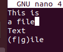
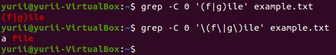

Хотите узнать, в чем разница между Grep, Egrep и Fgrep? Одним из известных инструментов поиска в Unix-подобных системах, которые можно использовать для поиска всего, будь то файл или строка или несколько строк в файле, – это утилита grep. Он очень обширен в функциональности, за счет большого количества поддерживаемых им опций, таких как: поиск с использованием строкового шаблона или регулярных выражений шаблон или perl based регулярных выражений и т.д.
Из-за его различных функциональных возможностей инструмент grep имеет множество вариантов, включая egrep (Extended GREP), fgrep (Fixed GREP), pgrep (Process GREP), rgrep (рекурсивный GREP) и т.д. Но эти варианты имеют незначительные отличия от оригинального grep.
В этой статье мы разберемся с различиями между тремя основными вариантами: «grep», «egrep» и «fgrep». Чтобы пользователи Linux знали, что выбирать в соответствии со своими требованиями.
Некоторые основные различия между grep, egrep и fgrep можно выделить следующим образом. Для этого набора примеров мы принимаем файл, в котором выполняется операция:

Команда Grep
Grep или Global Regular Expression Print – основная программа поиска в Unix-подобных системах, которая может искать любой тип строки в любом файле или списке файлов или даже выводить любую команду.
В качестве шаблона поиска он использует обычные регулярные выражения, кроме обычных строк. В Basic Regular Expressions (BRE) метасимволы вроде: ‘{‘, ‘}’, ‘(‘, ‘)’, ‘|’, ‘+’, ‘?’ теряют свой смысл и считаются нормальными символами строки и должны быть выделены специальным образом, если их следует рассматривать как специальные символы.
Кроме того, grep использует алгоритм Boyer-Moore для быстрого поиска любой строки или регулярного выражения.
1
$ grep -C 0 '(f|g)ile' example.txt
2
$ grep -C 0 '\(f\|g\)ile' example.txt

В примере выше, когда команда запускается без экранирования ‘(‘ ‘)’ и ‘|’, затем grep ищет полную строку, то есть «(f | g) ile» в файле. Но когда специальные символы были экранированы, grep обрабатывает их как метасимволы и ищет слова «file» или «gile» в файле.
Команда egrep
Egrep или grep -E – это другая версия grep или Extended grep. Эта версия grep эффективна и быстра, когда дело доходит до поиска шаблона регулярных выражений, поскольку она обрабатывает метасимволы как есть и не заменяет их как строки. Egrep использует ERE или Extended Extended Expression.
В случае egrep, даже если вы не избегаете метасимволы, команда будет относиться к ним как к специальным символам и заменять их своим особым значением вместо того, чтобы рассматривать их как часть строки.
1
$ egrep -C 0 '(f|g)ile' example.txt
2
$ egrep -C 0 '\(f\|g\)ile' example.txt

Здесь egrep ищет строку «file», когда мета-символы не экранированы, поскольку это означает значение этих символов. Но, когда эти символы стали экранированы, egrep рассматривает их как часть строки и ищет полную строку «(f | g) ile» в файле.
Fgrep или Fixed grep или grep -F – это еще одна версия grep, которая необходима, когда дело доходит до поиска всей строки вместо регулярного выражения, поскольку оно не распознает ни регулярные выражения, ни метасимволы. Для поиска любой строки напрямую выбирайте эту версия grep.
Fgrep ищет полную строку и не распознает специальные символы как часть регулярного выражения, несмотря на то экранированы символы или нет.
1
$ fgrep -C 0 '(f|g)ile' example.txt
2
$ fgrep -C 0 '\(f\|g\)ile' example.txt

Когда метасимволы не были экранированы, fgrep искала полную строку «(f | g) ile» в файле, а когда метасимволы стали экранированы, команда fgrep искала «\ (f \ | g \) Ile» все символы которые есть в файле.

Выше рассмотрены различия между «grep», «egrep» и «fgrep». Несмотря на различия в наборе используемых регулярных выражений и скорости выполнения, параметры командной строки остаются одинаковыми для всех трех версий grep.